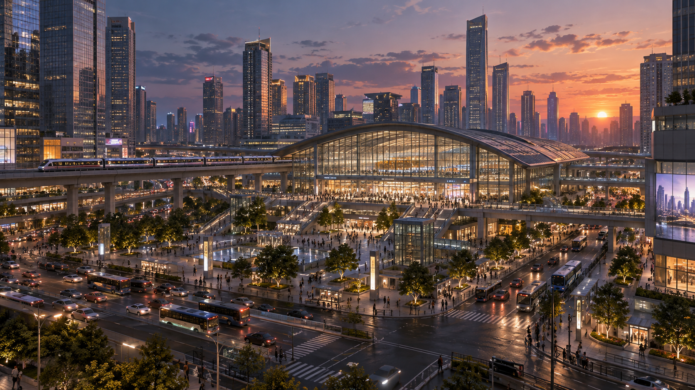
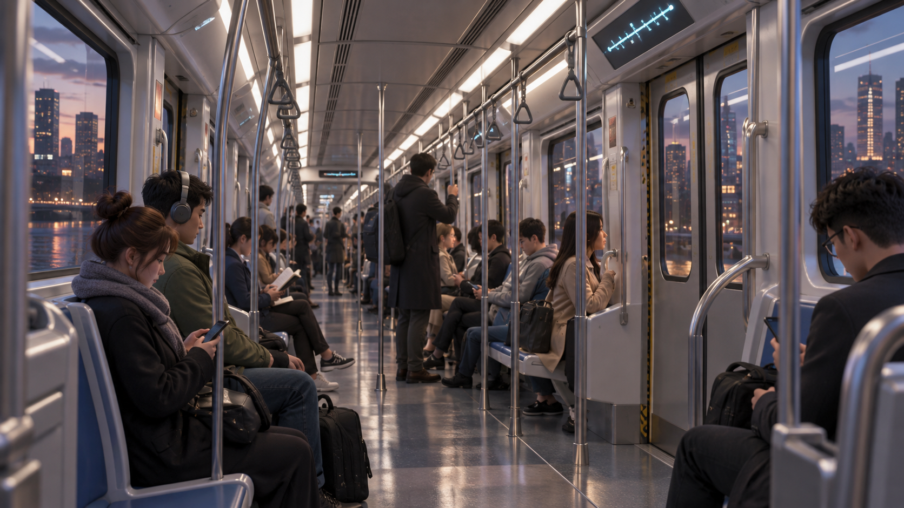
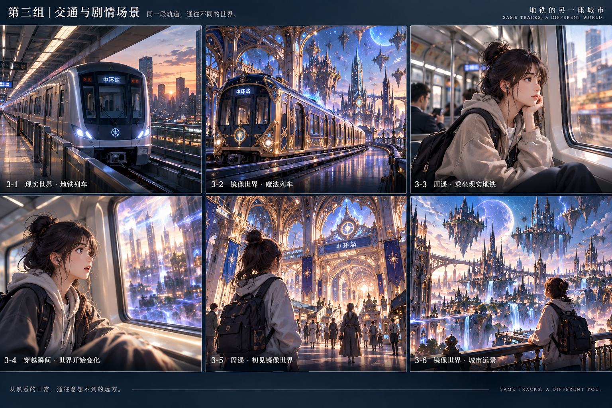

01_现实城市_原图
主选关键帧 · 1672×941
现实城市开场；可与06对照。
02_现实列车_整理版
主选关键帧 · 1672×941
现实通勤列车建立镜头；可与05呼应。
03_周遥通勤_整理版
主选关键帧 · 1659×948
周遥安静通勤。
04_发现另一座城市_整理版
主选关键帧 · 1672×941
窗外变化与人物发现异常；与03保持基本人物连续性。
05_魔法列车_整理版
主选关键帧 · 1672×941
魔法列车揭示；本版不要再混用古典圆头机车近景。
06_镜像城市_原图
主选关键帧 · 1672×941
镜像城市主要奇观；空间对应为目视级，非像素配准。
07_抵达镜像站厅_整理版
主选关键帧 · 1672×941
抵达与探索起点；背包、发丝的细小变化不在本轮深修。
08_镜像城市日常街道_新增
主选关键帧 · 1672×941
生活尺度的停顿与探索；店铺、居民和悬浮送货车体现日常魔法。
R01_周遥三视图_仅脸部体型比例参考
辅助参考，不能覆盖主选 · 1448×1086
角色侧背面、体型与脸部辅助参考。图中低盘发、职场装、单肩包、鞋和工作证不作为本片标准；本片人物以03/04/07为准。
R02_周遥表情_仅情绪参考
辅助参考，不能覆盖主选 · 1448×1086
参考惊讶、疑惑、微笑的情绪；不覆盖03/04的脸部、发髻和衣装。不把整张表情拼图作为视频输入。
R03_服装道具细节_历史候选
辅助参考，不能覆盖主选 · 1448×1086
保留三视与道具信息以便追溯；职场装、冒险装均不是本片换装指令。仅在确需细节时参考，不混用单肩包和本片黑色背包。

R04_现实车厢_空间参考
辅助参考，不能覆盖主选 · 1672×941
车厢纵向空间与日常乘客参考；左前景女性不是指定周遥。人物座位与窗框以03/04为准。

R05_原始六格分镜_仅动作叙事参考
辅助参考，不能覆盖主选 · 1536×1024
仅参考通勤、惊讶、抵达、远眺的动作与叙事。不要继承衣装跳变、文字、旧车头或额外浮岛大景；不可把整张拼图当最终帧。